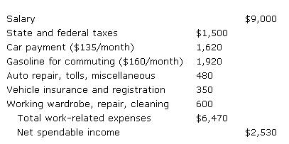

Janed Schofield
My husband and I had long dreamed of the day when we could afford to forsake our suburban home and live a simpler back-to-the-land existence. Then one night-armed with pen and paper -I decided to actually analyze the economics of the job that I'd hoped (vainly, it seemed) would help us someday reach our goal. When my computations were finished, I stared at the hard, cold facts and made a startling discovery: I couldn't afford to keep on working!
As a teacher, you see, I made $9,000 a year. Yet my actual spendable income (consisting of net wages minus work-related expenses) came to only $2,530 annually. I was truly amazed to learn how much it was costing me to work! Here's how my income was being distributed:
Well, I decided if that was all the further my nine-to-five routine was getting me, it was time to let go of it. So-with little hesitation-I did just that! From then on I managed to augment my husband's salary by cashing in on my love of horses. My years of training in riding, combined with my teaching experience, blended to produce a career-instructing young horsemen and -women-that not only gave me an income but provided me with lots of outdoor activity as well. My new "job" also afforded me more leisure time to develop home and garden skills that helped to stretch what money I did bring home.
What's more, my new occupation eliminated our need for a second family vehicle ...so I was able to barter my car for two acres of remote New Hampshire land. Of course, once we acquired that property, we immediately wanted to relocate to it ...and upon closer examination of my husband's earnings, we realized that the idea of simply packing up and trying to make do in a rural setting wasn't too farfetched at all!
The following list demonstrates how much of his income was being used each year to do no more than maintain our (unloved!) lifestyle:
Faced with those facts, we made the decision to abandon our suburban way of life, so we sold our house and moved onto the two wholly owned country acres ...on which we built a small, mortgage free camp. I now cook with bottled gas for a mere
$6.00 a month. Our light is produced by economical kerosene lanterns. A small barrel stove has taken the place of a costly oil furnace ...wood-obtained through barter-provides all our heat ...and a brook on our property supplies all the water we need.
My husband's financed pickup truck (and its accompanying payments) has been replaced by a used van (completely paid for) that we've converted into a camper. Soon our annual budget looked more like this:
As you can see, our change of lifestyle has resulted in our having more cash to spend than we did before. Best of all, however, is the fact that we're both finally free of the 40-hour week ...and can devote ourselves full time to gardening, foraging for wild edibles, fishing, hunting, writing (which helps pay our bills), and traveling.
In fact, our pleasure expenses have actually increased since our move to the country. For example, at the moment our camp is rented (providing us with another source of cash income) while we spend a year traveling in Alaska. After three months on the road, with our expenses totaling $2,900 for 12,000 miles of un forgettable experiences, we're now care taking a remote cabin on the Alaskan coast ...enjoying the icy splendor of glaciers and snowcaps while we continue to expand our knowledge and skills.
We're living our dream, and all it took was the gumption to free ourselves of the life we thought we couldn't afford to leave. You $16,550 know, until we faced the facts, we never realized the astronomical costs involved in maintaining a suburban lifestyle.
It seems that the solution to money problems sometimes lies not in earning more, but rather, in simplifying your way of life ... and perhaps even earning less. Moving from your present dwelling to a dream farm or camp in the country-to that place where you can garden and cut your own wood-may be the answer to your financial dilemma. In fact, you may be able to eliminate entirely that tedious 40-hour week, and meet your reduced expenditures by a part-time or seasonal job, or a home business.
The transition from a life in suburbia to one on the farm does take time, thought, and money. How much of each you'll need will, of course, depend on your skills, level of determination, hoped-for lifestyle, and current equities. You may have to "cash in" some assets and deplete your personal savings ...or you may have to devote extra time to honing a talent that'll net the in- come you'll require, or to learning the skills necessary to live in harmony with the earth. Whatever method you adopt to rid your self of those Monday morning blues, rest assured it can be done. And the entire process will prove to be an exciting journey ... one that may far exceed your original dreams.
|
 |
|
|